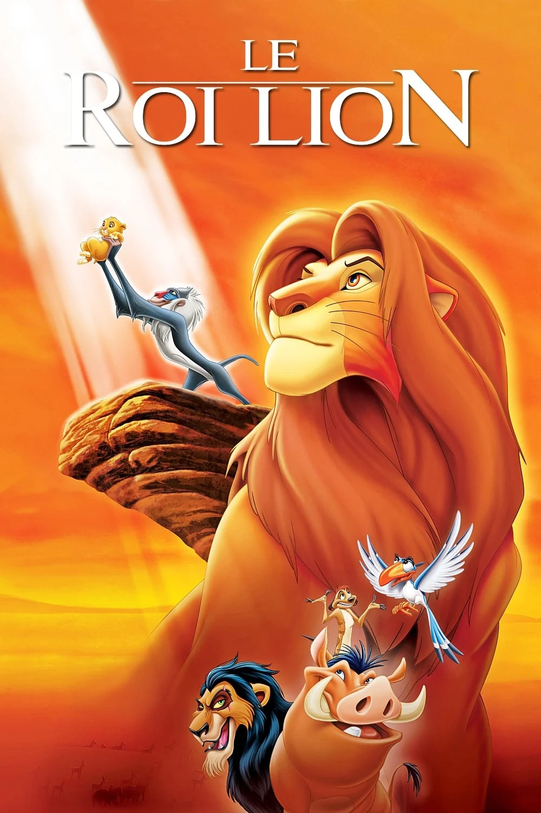
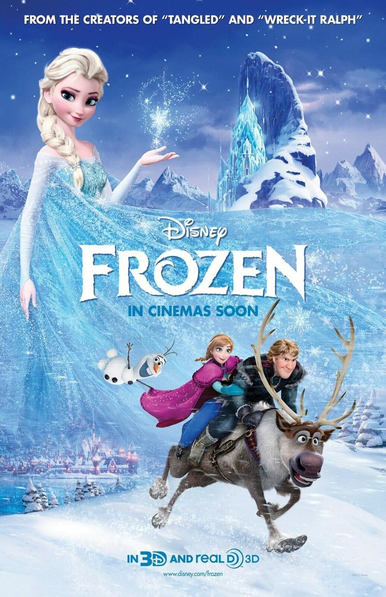
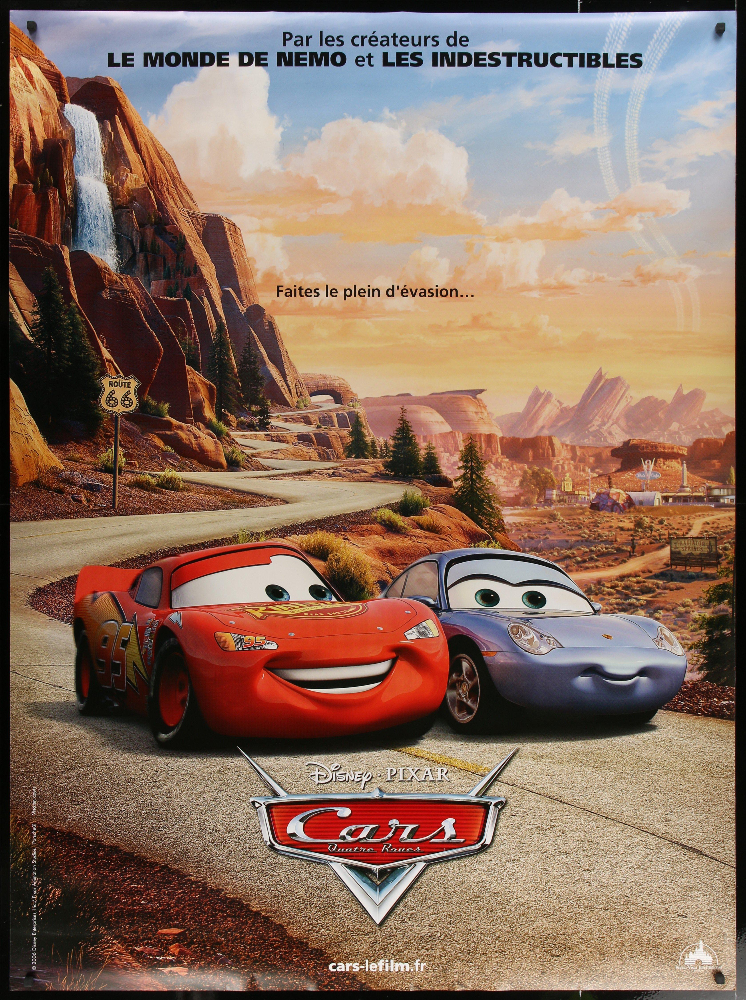
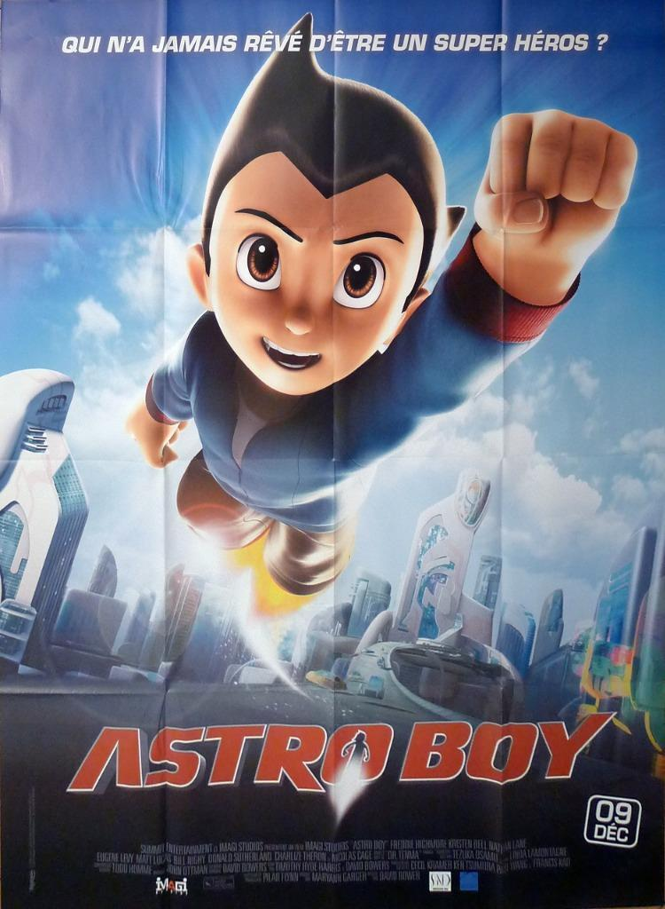

Programme Jeunesse
Kids
- Le Roi Lion
- La Reine Des Neiges
- Cars
- Astro Boy
Un lionceau nommé Simba est exilé de son royaume après avoir été accusé d'être responsable de la mort de son père, Mufasa. Avec l'aide d'un étrange duo composé d'un suricate et d'un phacochère, il décide de reprendre ce qui lui revient de droit lorsqu'il apprend qu'il est destiné à être roi.
Anna, une jeune fille aussi audacieuse qu'optimiste, se lance dans un incroyable voyage en compagnie de Kristoff, un montagnard expérimenté, et de son fidèle renne Sven, à la recherche de sa soeur, Elsa, la reine des neiges qui a plongé le royaume d'Arendelle dans un hiver éternel. En chemin, ils vont rencontrer de mystérieux trolls et un drôle de bonhomme de neige nommé Olaf, braver les conditions extrêmes des sommets escarpés et glacés, et affronter la magie qui les guette à chaque pas.
Flash McQueen, splendide voiture de course promise au succès, doit participer à la prestigieuse Piston Cup. À cause d'une déviation, Flash atterrit dans la petite ville de Radiator Springs, sur la Route 66. Il va alors rencontrer Sally, une élégante Porsche 2002, Doc Hudson, une Hudson Hornet 1951 au passé mystérieux, et Mater, une dépanneuse rouillée mais à qui on peut faire confiance.
Dans le futur, la Terre est devenue un dépotoir et quelques privilégiés vivent dans la ville flottante de Metro City. Le professeur Tenma a mis au point un robot militaire pour le président de Metro City mais, lors d'un essai, son fils Toby est tué. Tenma construit un sosie mécanique de son enfant, qu'il dote d'une mémoire et de superpouvoirs. Pourtant, Tenma ne parvient pas à aimer ce fils de substitution et Astro, qui a découvert qu'il était un robot, fuit dans le monde d'en-dessous.